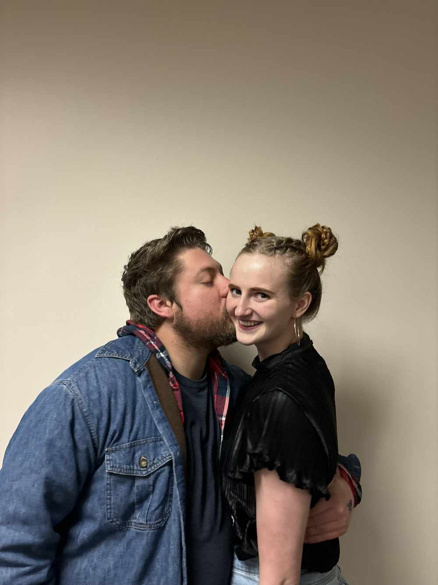
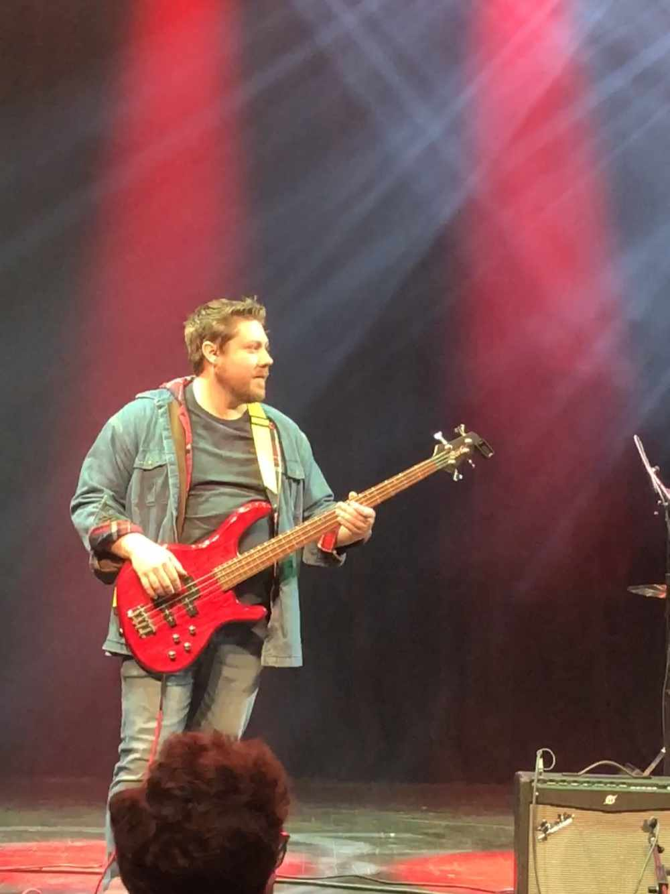

About Me
I'm an aspiring Software Engineer based in Atlanta, Georgia
Originally from Rigby, Idaho, I began my studies in Software Engineering aa mere 20 minute drive from home at Brigham Young University - Idaho. There, I met my beautiful wife, and we are expecting our first - a little baby girl around the end of the year. We recently moved to Atlanta, Georgia and have been loving every moment of it.
More than anything, I love technology and how it has developed over the years. Everything, from the evolution of video game consoles to how the standard for computer input has become the keyboard and mouse, fascinates me.
I enjoy a variety of different video games but prefer any of the Souls games developed by FromSoftware, and have beaten most of them. My favorite console was (and continues to be) the Nintendo 64, as it was what my friends and I spent hours playing when I was a kid.
Before we moved, I played bass guitar in a small local band in Rexburg, Idaho called The White Pines.
